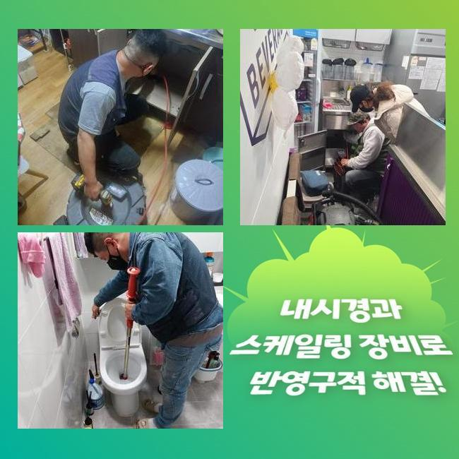
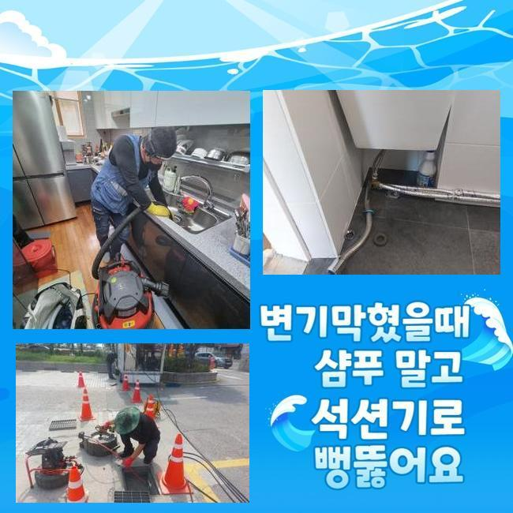
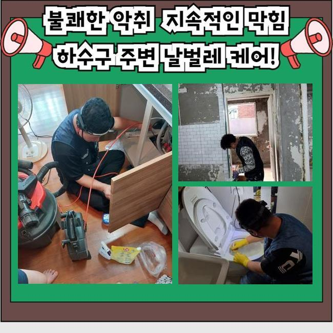
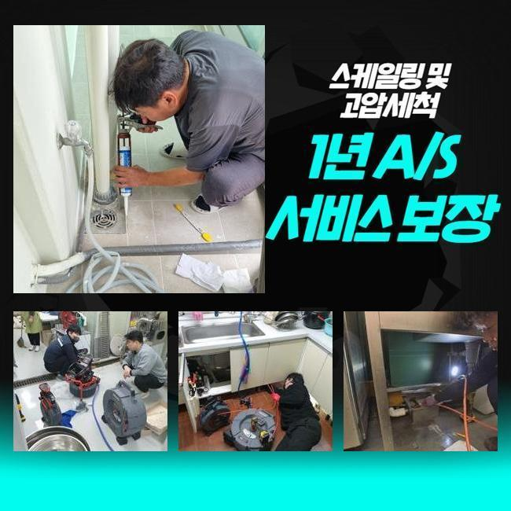
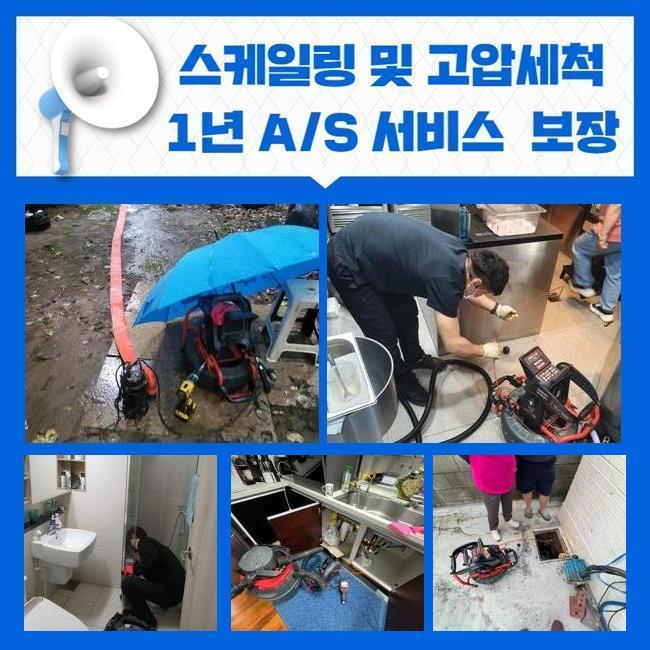
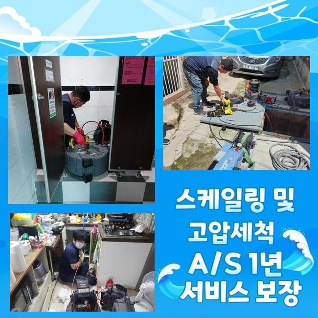

🏠 양평 강상면싱크대배수관역류 지평면 배수로뚫기 부속수리
용인 싱크대막힘 전문 시공 후기

📋 작업 개요
- 위치: 용인
- 서비스 유형: 싱크대막힘, 하수구막힘, 배관막힘, 누수수리, 역류해결, 뚫는업체, 배관청소, 고압세척, 악취차단
- 작업 일시: 2024. 11. 11. 11:16
- 업체명: 하수구수사대 (010-5615-2118)
🔍 문제 상황
양평 강상면싱크대배수관역류 지평면 배수로뚫기 부속수리
하수가 솟구친다면 신속히 해결하는것이 우선이겠는데요
하수라인이 정체되는 까닭은 여러가지인데 이 중 가장 흔한 원인들은 기름으로 생긴 흡착물과 식재료의 찌꺼기들입니다
기름들은 기간이 흐름에 따라 관로에서 고착되어 진득한 오염물을 만들게됩니다
슬러지들이 알게 모르게 쌓이면서 하수의 유수를 막게되는것입니다
불러주신 장소에 내방하니 배수구 주변으로 하수들이 배출이 안된 상태였고 기름성분까지 역류되어 위생적인 측면도 고려해야했습니다
슬러지의 경우 오일류나 그릇등을 세척할 때 흘러가는 찌꺼기등이 그 까닭으로 작용하는데요
기름들이 관로로 내려가게되면 벽면에서도 퇴적되며 진득한 오염물을 만들죠
위와같은 상태에선 통수를 방해하며, 알게 모르게 배출되는 잔해물들을 끌어당겨 하수관을 정체상태로 만들어냅니다
석션장치를 이용하며 하수들을 제거하며 이물들도 빨아당겼어요

🔎 원인 분석
💡 전문가 진단: 정밀 진단 장비를 사용하여 슬러지의 고착 여부를 판명하고 타격/세척 작업을 실시했습니다.
석션장치는 공기압을 이용하여 물과 이물들을 흡입시켜주는 기계로 하수도 이물제거에 큰 비중을 차지합니다
하수를 제거시키고 하수도의 상태들을 살펴보고자 내시경장비를 꺼냈습니다
내시경을 소개하자면 배수관을 그때그때 보여주는 기기로서 증상의 까달과 지점들을 오차없이 체크해볼 수 있게 하죠
오염물의 양상과 고착된 상태들을 보니 스케일링 장비보단 빨리 시정이 진행되는 스프링장비를 써보았습니다
샤프트장치는 헤드부에 체인이 부착된 기계로 단단해진 잔해들을 제거시킬 때 이용하죠
그렇지만 이와같은 증상에서는 스프링장치를 이용하는게 좋겠다는 생각을 했죠
스프링기기를 이용해 배수관의 물길들을 터주었더니 체증이 내려간걸 확인했어요
역류된 이물의 경우 제거시키기 위해 세척을 수행해야했고 고착물도 배수가능 상태로 만들어놓고 여과를 거쳐 제거시킬 목적이였는데요
솟구치게 된 잔해는 식자재 폐기물 기름기 플라스틱과 같은 것도 있었죠
이러한 이물의 경우 배수관에서 빠지는 일 없이 켜켜히 쌓입니다
이물제거를 위해선 물리적 힘을 사용하는 조치법과 케미컬적인 방법들을 운용하는 게 좋죠

🔧 작업 과정
의뢰자는 음식점을 운영해오던 상황이였고 오일들이 존재하는 재료들을 다루는 공간으로 하수관으로 오일들이 많이 축적된 모습이였습니다
고객분께 그릇들을 닦으실 때 어떤 방식으로 진행하시나 여쭤보았더니 잔반들을 개수대에 담아주고 헹궈내고 따로 버려주고 설거지들을 해왔다고 설명하셨습니다
이런식으로 진행하시면 막힘 주범 1위인 오일들이 개별라인들로 흐르게된다고 일러드렸습니다
주방 이용 시에 기름들은 따로 담아주고 관로 속으로 쏟지 않게 이용해주는게 합리적이라고 안내드렸어요
배수관으로 오일들이 빠지면 이 기름들이 출수구까지 배출되기 힘들며 관로에서 배출되다가 벽면쪽에서 엉키게되면서 딱딱한 상태로 변하죠
기름성분에 여타 이물들과 섞임과 동시에 뭉쳐져 산패하게되고 기름뭉치들이 생성되요
기름때는 하수관을 좁히게 해 장구간 막히게 함과 동시에 냄새까지 야기시켜 여름일때라면 날파리와 같은 것을 생겨나게 만듭니다
그래서 기름뭉치들이 생기는 일이 없도록 청소시키는게 중요하겠습니다
그리고 통수로가 협소해질 시 오수들이 빠지지 못해 압의 상승으로 역류증세가 야기되어 이물질과 슬러지형 이물이 솟구쳐 주방자체를 더럽히죠
하수관에서 배출시킨 이물의 경우 오랜시간에 걸쳐 부패한 상태였고 냄새도 무시할 수가 없었어요
설거지나 바닥청소들까지 찬물들로 하시기에 기름 덩어리들을 예방하려면 온수들로 설거지과정을 진행하는게 권장하는 바라고 일러드렸답니다
설거지들을 종료하는 시점에 60정도의 수도를 배수관으로 빠지게하면 편하게 관리해보실 수 있다고 안내했습니다
위와같이 진행할 시 기름 오염물을 방예할 수 있으며 냄새가 생기는 것 또한 차단가능해요
마찬가지로 하수도에 온수를 빠지게하면 도움되죠
허나 모든 슬러지 상태의 오염물이 사그라드는건 아니여서 배수 관련 용액들을 이용하여 사용해보는 것도 좋겠습니다
첫번째로 식용기름들이 하수관으로 배출될 수 없게끔 유의해주는게 중대하다고 일러드렸습니다
잔해물의 축적량을 확인하고 놀란 고객님께선 관리의 중요성을 느꼈다고 하셨답니다


✅ 작업 완료
정체되어 있었던 하수의 경우 배출이 완료된 상태였어요
신속히 청소들을 마쳤기에 다른 문제들도 예방했습니다
오수가 솟구치게 된다면 신속히 수습하는게 필요하겠습니다
배수가 원활한지 물샘이나 놓치고 있는건 없는것인지 관찰하며 끝맺었어요
서둘러 달려오는 전문가에게 상담을 진행하고 문제를 잘 시정해 걱정없는 하수 환경을 경험하시길 바랍니다!




⚠️ 베란다 누수 및 방수 관리 방법
- ✅ 비가 많이 올 때 창틀 주변이나 아래층 천장에 얼룩이 생기는지 정기적으로 확인해 보세요.
- ✅ 우수관 주변 실리콘 마감이 들뜨거나 깨진 틈새가 있는지 손상 여부를 수시로 체크하세요.
- ✅ 베란다 바닥 타일의 줄눈(메지)이 소실되면 그 틈으로 물이 침투하여 누수가 유발됩니다.
- ✅ 누수 의심 증상 발견 시 방치하면 아래층 손실이 커지므로 즉시 전문가의 진단을 받으십시오.
💡 핵심 정리
- 확실한 장비 작업(내시경 점검 및 샤프트 스케일링)으로 원인을 뿌리 뽑습니다.
- 작업 후 1년 이내에 동일한 부위 재발 시 100% 무상 A/S 서비스를 보장합니다.
- 서울 · 경기 · 인천 전 지역에 24시간 언제든 긴급 출동할 수 있도록 항시 대기 중입니다.
❓ 자주 묻는 질문 (FAQ)
🚨 용인 싱크대막힘 문제로 고민이신가요?
정확한 원인 진단과 확실한 시공으로 재발 없는 해결을 약속드립니다.
24시간 긴급 출동 | 서울 · 경기 · 인천 전지역 | 1년 내 재발 시 무상 A/S